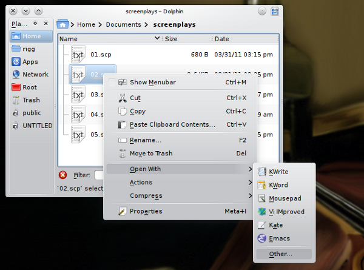
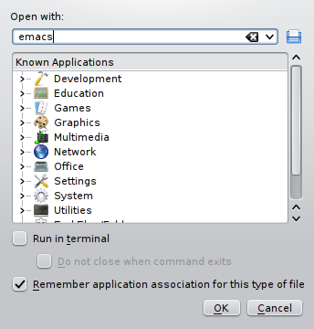
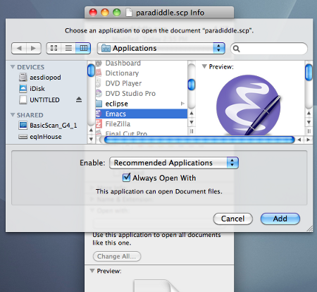

Made on Free Software.


Writers often work in one of two ways: either the way that a software application encourages them to work, or in whatever way they stumble into. It wasn't until I got a job as a paid writer that I learned some amazing techniques that are common among software programmers and technical writers that us creative types could really learn from.
Interestingly, the screenplay world actually has a lot more in common with programmers than you'd realize, when you think of how programmers have to re-write code and send one another changes to existing source code, much as a screenwriter may have to insert pages or dialogue into an existing screenplay without having to re-print the entire thing for the entire cast and crew.
So, here are some advanced tips on how to manage, organize, and deal with your screenplay files.
Having been a Mac user until fairly recently (I've since switched to Linux), I always thought that there was something magical about file extensions; if you rename an MP3 file to .txt then that file is destroyed, right? Actually, as it turns out...no, that's wrong.
There is nothing magical or sacred about file extensions. You can call a file whatever you want, you simply then have to be explicit about what the computer should do with that file.
That said, it's actually quite helpful to name files with sensible extensions, because it provides you with more information about that file, at a glance. If you name your screenplay files .txt, then they could be anything from text clippings from an online news article that you like, or a shopping list, or a screenplay. So, help yourself out and call your screenplay files .scp or .screenplay, like this:
It not only tells you more about the file from just looking at it in your file manager (such as your Finder, or Dolphin, or Nautilus) but it also helps out when you need to do a search for a file that you've misplaced. Hunting for *.scp is a lot easier than trying to remember what exactly you might have called the fourth revision of the second draft of your eleventh untitled screenplay.....
If you followed the Getting Started tutorials on this site, then GNU Emacs will automatically detect when a .scp or .screenplay file needs to be opened in screenwriter-mode. That's good.
Your computer, on the other hand, won't know what to do with a .scp or .screenplay file. It won't know to open it in Emacs, although it might auto-detect (if you're running Linux) that it is a text file, so it might open it in KWrite or gedit. It is quite useful, therefore, to let your computer know what application it should open for you when you click on foo.scp or foo.screenplay.
On KDE, for instance, you would first right click on the screenplay file and choose the Open With... option:
Type in the name of the application to use with this type of file (in this case, obviously, that would be emacs) and make sure that the box next to Remember application association for this type of file is checked. From now on, any time you open a .scp file, it will be opened in Emacs, which will switch over to screenwriter-mode automatically.
On Mac, select the .scp file and choose the Get Info option from the File menu. In the Info panel, in the section labeled Open With, select Other.
An application chooser will appear. Choose Emacs and make sure that the Always Open With box is checked.
From now on, any time you open a .scp file, it will be opened in Emacs, which will switch over to screenwriter-mode automatically.
On Windows, I believe the process is similar but have no Windows experience to know for sure.
I used to save my screenplays as one file that contained everything from the title page to the FADE OUT. This does work but it's actually not very efficient. During writing a screenplay as well as after it's finished, scenes are frequently moved; scene 12 becomes scene 35 and scene 42 becomes scene 1, and so on. Making your screenplay a monolithic file means a lot of confusing searching, scrolling, copying, and pasting.
The answer I use is to save each scene as a new file. If I need to move scenes around, I simply open my file manager (Dolphin on KDE, Finder on Mac OS, Explorer? on Windows), navigate to that screenplay's folder, and renumber the scene I need to move. Simple and efficient.
Compiling my screenplay in the end is simple. I simply concatenate all the scenes together into one document, which can be done in one simple command on Linux or a the Terminal.app on OS X:
As you can see, I reserve the .screenplay extension for only a final build of my complete screenplay; the .scp files are therefore the scene files.
For more on these sorts of actions, such as building the screenplay, numbering scenes for the shooting script, and more, please see the screenplay-tools suite included with screenwriter-mode.
Some screenwriting software maintains running databases of all the locations and characters you use as you write. Then, when you are typing out a character's name, it auto-suggests names that match what you seem to be typing. Well, so does screenwriter-mode.
As you write your screenplay, each slug line and character name will be rememembered for you. For instance, if we have established a location called INT. COLLEGE DORM - NIGHT and we want to recall that exact name later, simply hit alt-s to enter the SLUG LINE mode, and use the arrow keys to scroll through the different listings of locations you've used.
Alternately, you can search the database for locations. I have GNU Emacs set so that control-s searches my document forwards and control-r searches my document in reverse. You may configure yours to do this by adding these lines to your .emacs file:
(global-set-key (kbd "C-S") 'isearch-forward-regexp)
(global-set-key (kbd "C-R") 'isearch-backward-regexp)
From now on, you can enter SLUG LINE mode (or CHARACTER in the DIALOGUE mode), and use control-r to search dynamically through your history of locations as you type; ergo, you would hit alt-s to get into SLUG LINE entry mode, then control-r to start a dynamic search, and then type the location, hitting Return when the location matches, and Return again to insert that slug line into the script.
Many novice computer users under-estimate the power of plain text, until just a few too many files stop opening up due to the file format falling out of favor, or the software vendor going out of business, or your license isn't co-operating that day, or whatever.
This is the power of plain text; it can be easily formatted, it is viewable and editable by any text editor on any platform, and it can be read by human eyes as well as screen-readers for the blind.
Plain text can also be easily parsed, which makes the screenplay-tools suite possible. With these shell scripts, it is possible to extract useful production information from the screenplay and utilize that information during pre-production.
Another plug-in for Emacs, called Org-Mode, specializes in scheduling and task management. Learning Org-Mode can free you from the need of complex, expensive scheduling and budgeting software that, generally, have the same issues as the overly.-complex and expensive screenwriting software.
To that end, screenwriter-mode can integrate on a basic level with Org-Mode, currently by providing lists of locations and characters in Org-Mode style formatting (still, naturally, plain text).
Made on Free Software.